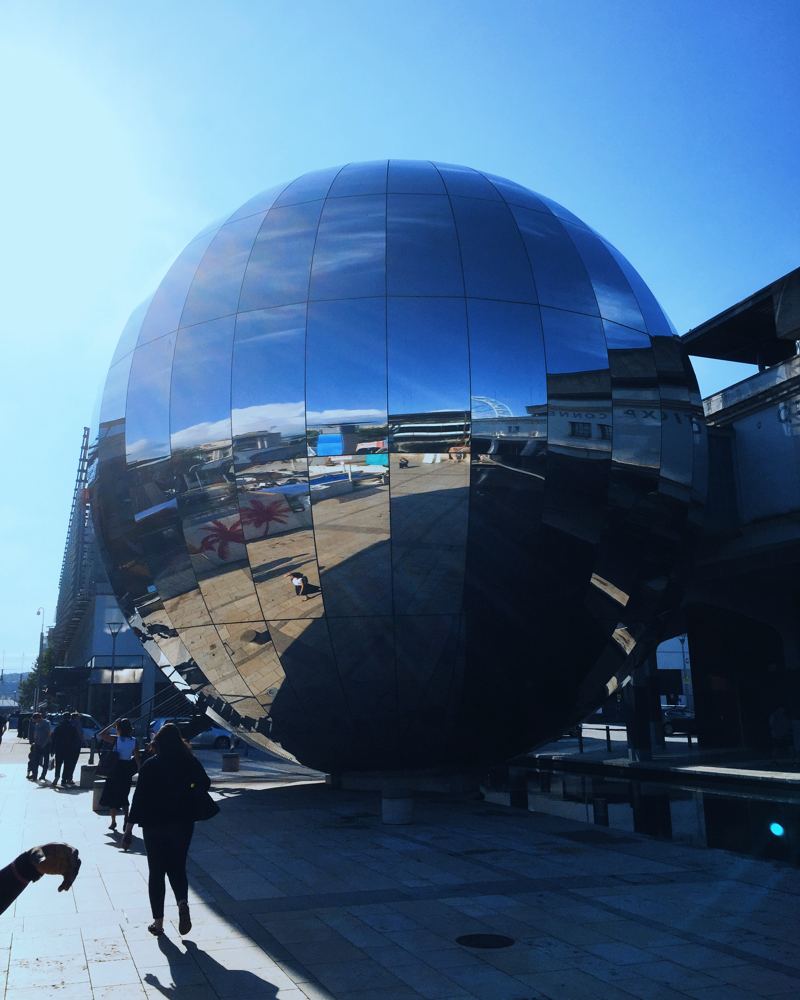
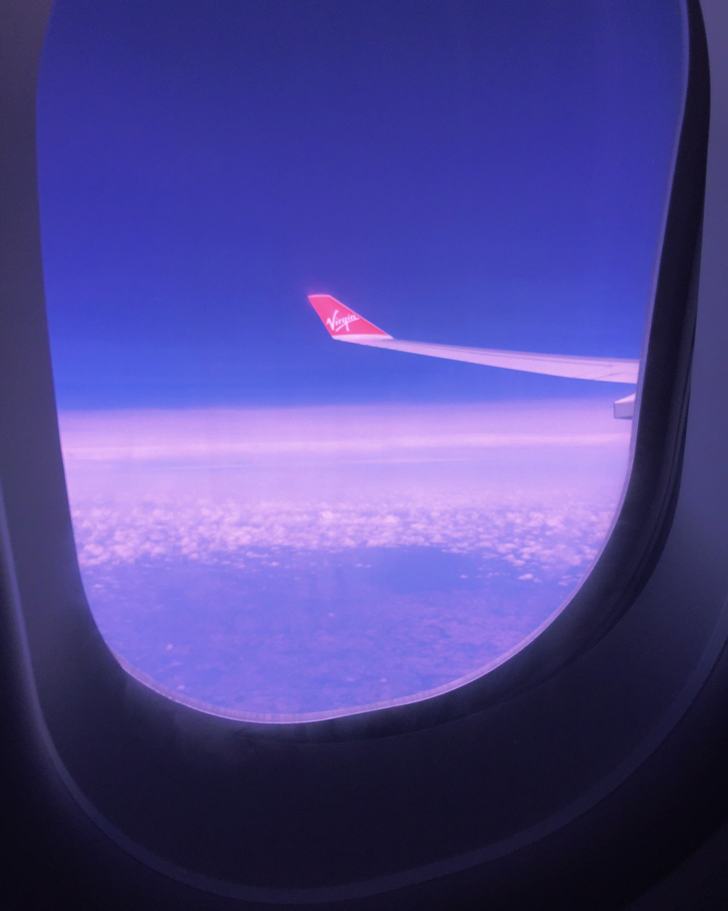
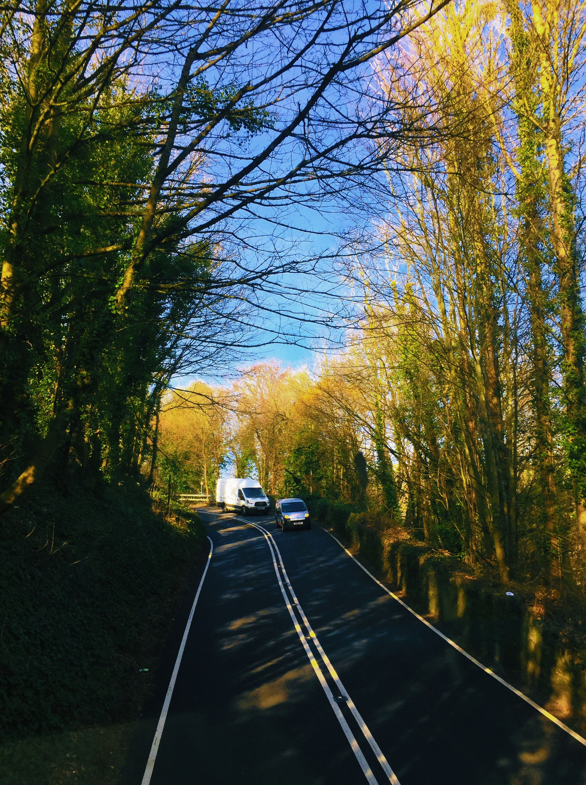
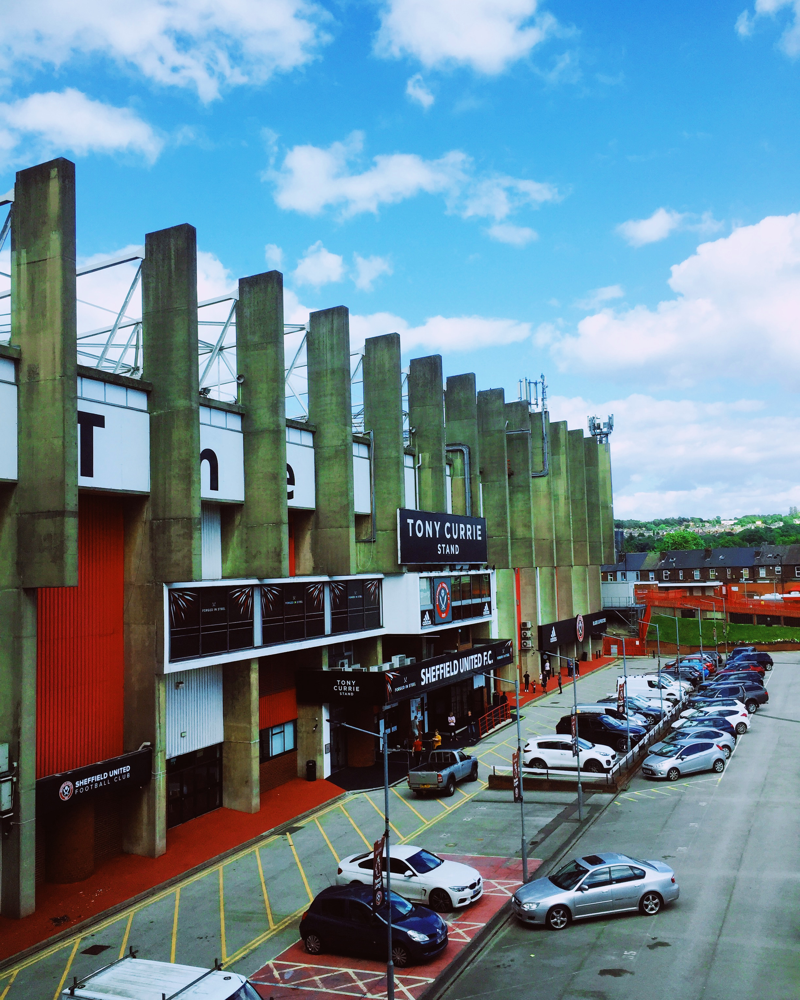
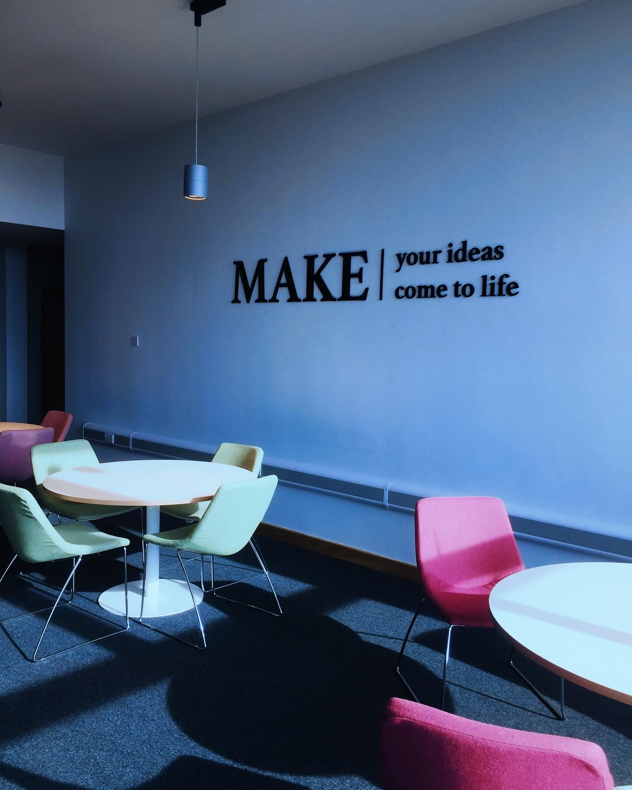
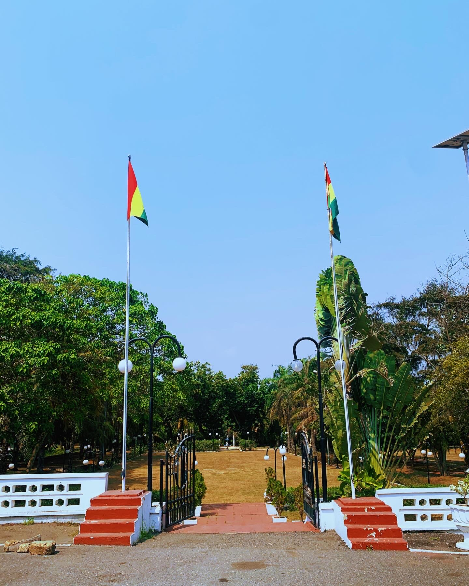
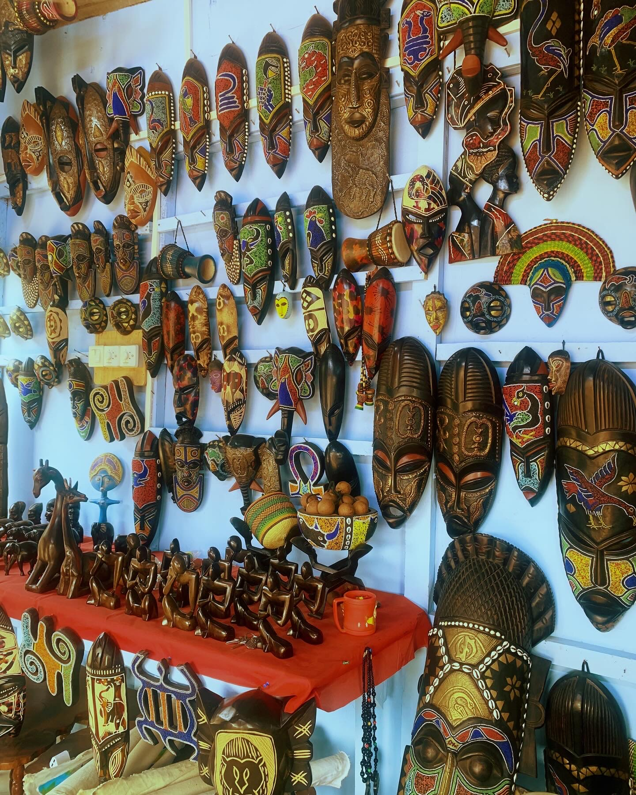
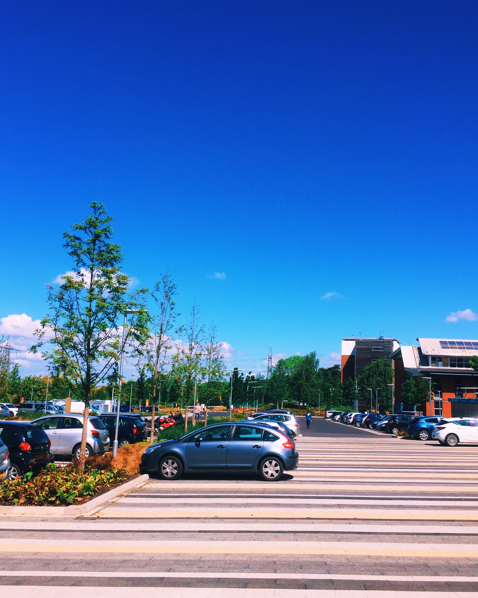
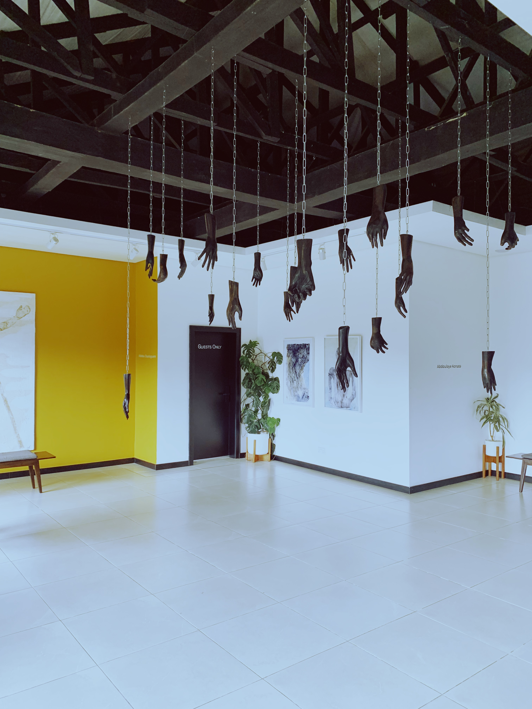

Photos
I take photographs because I like paying attention.
Most of what I photograph is ordinary. A street I have walked past before. Light falling across a building. A place I am visiting for the first time. People, objects, signs, colours, small details that would be easy to miss.
I have always enjoyed looking at things closely. Photography gives me a reason to slow down and keep some of what I notice.
Places
A lot of my photographs come from being somewhere else.
Cities, streets, buildings, landscapes, hotels, airports, neighbourhoods and the spaces in between. I like seeing how places are put together and how people make them their own.
Some photographs are from travels. Others are from places much closer to home.
Everyday things
Not everything needs to be a special occasion.
Sometimes it is the light in a room, a shopfront, an interesting chair, someone's clothes, a meal, a wall, or something I noticed while walking.
These are often the photographs I like most.
People
I photograph people too, although I am usually more interested in the moment than the portrait.
Friends, family, people I meet, and people who happen to be part of a place I am exploring.
Lagos and Nigeria
Home has a way of becoming familiar enough that you stop seeing it.
Photography helps me look again.
Lagos has plenty to look at. Its streets, buildings, colours, movement, contradictions, quiet moments and constant change. I have also photographed other parts of Nigeria when I have had the chance.
A visual journal
There is no particular theme I am trying to maintain here.
This is simply a collection of things I have seen and wanted to remember.
Some photographs have a story behind them. Some do not. A few are technically good. Others are here because I still like looking at them.
That is enough.









Find more
I share photographs from time to time on Instagram and VSCO.